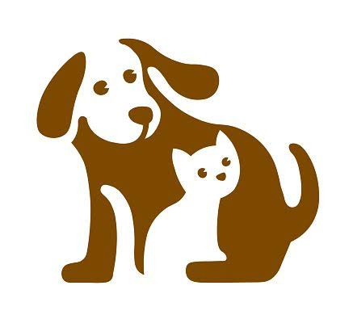

Bienvenidos a nuestro proyecto
Este proyecto busca crear conciencia sobre el cuidado, respeto y protección de perros y gatos.

Cuida y respeta a las mascotas
Todos los perros y gatos merecen tener un hogar, alimento, atención y cariño. Adoptar es una forma de darles una segunda oportunidad.